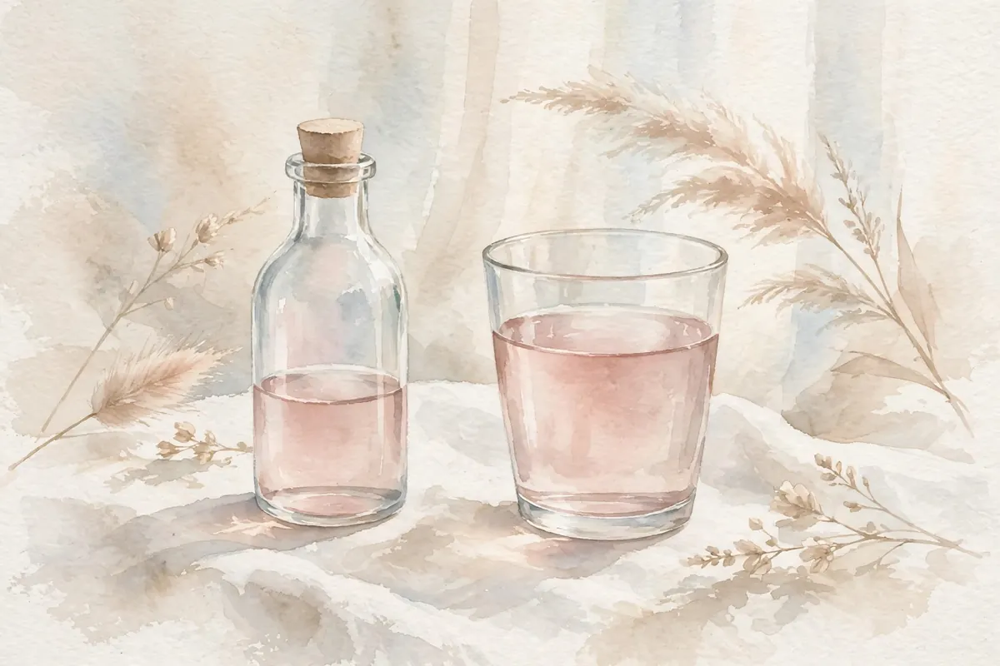

トップ ＞ インナーケア・サプリ ＞ 美容ドリンクの表示の読み方：1本あたりと箱あたりの違い
美容ドリンクの表示の読み方：1本あたりと箱あたりの違い

ドラッグストアやコンビニで見かける美容ドリンクは、小さな瓶に入った飲み物タイプの商品です。お客様から「1本ずつ買うのと、箱で買うのと、表示の見方が違うんですか」と聞かれることがあります。確かに、1本の瓶の表示と、箱の表示は、書かれている数字が違います。この記事では、特定の商品の話ではなく、ドリンクタイプの表示の読み方を整理します。私自身、新しいドリンクを手に取るときは、まずこの表示を確認するようにしています。
まず見るのは「1本あたり」の欄
1本の瓶の表示でまず確認したいのは、内容量と一日摂取目安量です。「内容量50mL」「1日1本を目安に」といった書き方があり、1本が1回分なのか、1日分なのかがここで分かります。原材料名の欄も、瓶の裏面に書かれています。ドリンクは食品として扱われるため、原材料名は多く含まれるものから順に並んでいる、という食品表示の基本は、サプリメントと同じです。
また、「栄養機能食品」や「機能性表示食品」といった表示があるものは、届出や基準にもとづく表示の決まりがあります。パッケージのどこに何が書かれているかは商品ごとに違いますが、「1日あたり」の数字がどこにあるかを探すのが、読み方の出発点です。
箱の表示は「1箱あたり」の合計
箱で買う場合、箱の表示には「10本入り」「1箱（50mL×10本）」といった書き方があります。ここで注意したいのは、箱の表示の数字は、1箱ぶんの合計だということです。たとえば、1本あたりの成分量が書かれている欄と、箱全体の合計が書かれている欄が、別の場所にあることがあります。
1日あたりの計算をするときは、まず1本あたりの数字を確かめてから、本数で掛けるのが基本です。「1箱で10日分」と書かれている場合は、1日1本の前提で計算されています。朝晩2本飲む前提のものもあれば、1日1本のものもあり、箱の持ち日数はその前提で変わります。買う前に、1日あたり何本の前提かを確認しておくと、定期購入の間隔を考えるときにも役立ちます。
飲むタイミングと保管の表示
ドリンクの表示には、「食後に」「おやすみ前に」といった、飲むタイミングの案内が書かれていることがあります。あくまで商品の案内としての書き方ですが、自分の生活リズムと照らし合わせて、続けやすいタイミングを選ぶ材料になります。冷やして飲む案内が書かれているものは、冷蔵庫での保管が前提です。
保管の表示も確認ポイントです。「直射日光を避けて保管する」「開封後はすぐにお飲みください」といった案内が書かれていることがあります。瓶タイプは、一度開けたら飲み切るのが基本で、残したものを翌日に回す使い方は、表示の案内から外れてしまいます。まとめ買いをするときは、賞味期限と本数を確認し、飲み切れる量かどうかを考えてから選ぶのが無難です。
飲み忘れを防ぐ工夫も、続けるための材料です。朝食のあと、寝る前など、毎日の決まった動作とセットにすると、飲むタイミングが習慣になります。箱から1本ずつ取り出すときに、残りの本数を目で確認することになるため、買い足しの時期も分かりやすくなります。ドリンクは、飲む仕組みを作る道具でもあるのです。
迷ったときの基本
表示の読み方に迷ったら、まずはパッケージの表示通りに使うのが基本です。表示は、その商品の容器や内容量を前提に決められています。飲んでいて体に合わない感じがしたときは、使用をいったんやめて、気になる場合は医師や薬剤師などの専門家に相談してください。この記事は表示の読み方の案内であり、商品ごとに表示がある場合は、そちらが優先です。
セラフィナ「1本の表示と箱の表示、見る場所が違うだけで読み方は同じだよ。1日あたりの計算から始めてみてね」

セラフィナ｜美容の道具箱の案内役
「量と表示が分かれば、美容は失敗しない。」——セラフィナと白猫のモコが、買う前のチェックポイントを案内します。綺麗になりたい気持ちに正直に、でも表示は冷静に読むのが、このサイトの約束です。